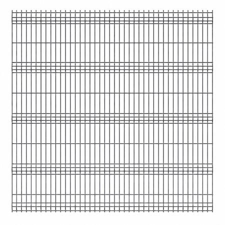
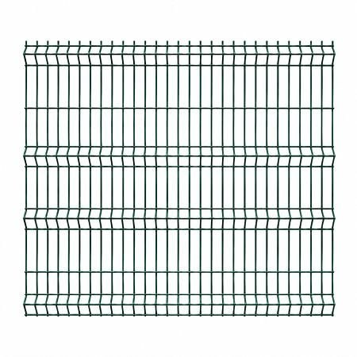

De ce conteaza alegerea corecta a gardului?
Un gard bine ales inseamna delimitare clara a proprietatii, securitate pentru familie si un aspect estetic care ridica valoarea casei. Panoul zincat rezista 15-20 ani fara intretinere, iar cel duplex (zincat + vopsit) ajunge la 25-30 ani durata de viata in conditii normale de exterior.
Inaltimea, tipul de panou, culoarea si tipul de poarta depind de suprafata, buget si scopul principal — rezidential sau industrial. Scrie-ne pe WhatsApp si iti recomandam solutia optima.
Panouri Gard
Panouri sudate din sarma zincata sau vopsita electrostatic — cele mai utilizate solutii pentru garduri rezidentiale si industriale.

Panou Gard Zincat (50×200mm ochiuri, 4mm sarma)
- Zincat la cald — rezistenta 15-20 ani fara vopsire
- Rigid, usor de montat, nu necesita intretinere
- Rezistenta la vant si solicitari mecanice
- Pret accesibil, raport calitate/pret excelent

Panou Gard Vopsit Electrostatic (RAL)
- Aspect estetic superior, culoare uniforma si durabila
- Rezistenta la UV si coroziune
- Gama larga de culori RAL disponibile
- Ideal pentru proprietati unde aspectul conteaza

Panou Gard Duplex (zincat + vopsit)
- Durata de viata 25-30 ani
- Protectie maxima la coroziune
- Aspect premium, garantie extinsa
- Rezistenta superioara la intemperii si UV

Panou Gard Greu (6mm sarma, industrial)
- Rezistenta la impact si tentative de efractie
- Ideal pentru securizare perimetru
- Nu poate fi indoit manual
- Zincat la cald, rezistenta sporita la coroziune
Stalpi & Fundatie
Suportul structural al gardului — stalpi metalici zincati si sisteme de fundatie pentru montaj solid si durabil.
Stalp metalic patrat 60×60mm zincat
Stalp zincat din profil patrat 60×60mm, disponibil in lungimi de 1.5m, 2m, 2.5m si 3m. Suport principal pentru panouri gard, se baga in beton.
Afla disponibilitateStalp metalic rotund 48mm zincat
Stalp zincat din profil rotund 48mm diametru. Varianta mai economica, potrivita pentru garduri usoare si plasa impletita sau sudata.
Afla disponibilitateSistem fundatie stalp (placa ancoraj + suruburi)
Sistem de montaj fara betonare — placa metalica de ancoraj cu suruburi expandabile, pentru fixare directa pe beton existent sau dale.
Afla disponibilitateBeton gata preparat saci 25kg
Mortar uscat pentru umplerea fundatiei stalpilor. Aproximativ 1 sac per stalp la adancime de 60cm. Se amesteca cu apa direct in groapa.
Afla disponibilitatePorti & Acces
Porti batante si culisante din panouri tip gard — zincat sau vopsit, pentru acces pietonal si auto.
Poarta batanta simpla (1 canat, 1m latime)
Poarta pietonala cu 1 canat din panou tip gard, montata pe balamale reglabile. Se inchide cu yala sau broasca. Zincat sau vopsit electrostatic RAL.
Afla disponibilitatePoarta batanta dubla (2 canate, 3-4m latime)
Poarta auto cu 2 canate, latime totala 3-4m, din panouri tip gard. Cu zavor central, balamale grele, zincat sau vopsit RAL la alegere.
Afla disponibilitatePoarta culisanta autoportanta (3-6m)
Poarta care culiseaza lateral, autoportanta — nu necesita sina ingropata in pamant. Deschidere 3-6m, ideala pentru intrari auto cu teren ingust.
Afla disponibilitateAccesorii poarta: balamale, zavoare, yale
Balamale reglabile, zavoare tip bara, yale tip ingropat, manere si opritori de poarta. Toate zincate sau din inox pentru rezistenta la exterior.
Afla disponibilitatePlasa & Sarma
Plasa sudata, plasa impletita si sarma ghimpata — solutii clasice si economice pentru garduri si securizare perimetru.
Plasa sudata zincata (rola 10m, 25m, 50m)
Plasa sudata din sarma zincata, ochiuri 50×50mm sau 50×100mm, diametru sarma 2-3mm. Disponibila in role de 10m, 25m si 50m latime 1m/1.5m/2m.
Afla disponibilitatePlasa impletita zincata (gard clasic)
Plasa impletita flexibila, zincata. Role 10-50m, inaltime 1m/1.5m/2m, ochiuri 50×50mm. Varianta clasica si economica pentru garduri de gradina si teren.
Afla disponibilitateSarma ghimpata simpla si dubla
Sarma ghimpata zincata, disponibila in rola 100m sau 250m, simpla sau dubla rasucita. Folosita pentru securizare suplimentara deasupra gardului.
Afla disponibilitateSarma zincat simpla (rola 2-5 kg)
Sarma zincata simpla in role de 2-5 kg. Utilizata pentru legarea plasei de stalpi, fixari diverse in constructii si gradinarit.
Afla disponibilitateAccesorii Gard
Tot ce mai ai nevoie pentru un gard montat corect si cu aspect ingrijit.
Coliere metalice fixare plasa
Coliere metalice zincate pentru fixarea plasei sudate de stalpi. Punga 50 bucati — suficienta pentru aproximativ 5m de gard.
Afla disponibilitateVopsea spray RAL (touch-up)
Spray vopsea RAL pentru retusuri pe panouri sau stalpi zincati. Ideal pentru acoperirea zgariieturilor aparute la transport sau montaj.
Afla disponibilitateCapace stalpi PVC sau metalice
Capace de protectie pentru capul stalpilor — previn patrunderea apei in profilul tubular si prelungesc durata de viata a stalpilor. PVC sau tabla zincata.
Afla disponibilitateSarma de legat zincat (rola 1kg)
Sarma moale zincata pentru legarea plasei de stalpi si alte fixari la montajul gardului. Rola 1kg, diametru 0.8-1.2mm.
Afla disponibilitatePoarta pietonala mica (1 canat 60-80cm)
Poarta mica pentru acces pietonal secundar — latime 60-80cm, 1 canat, cu balamale si yala incluse. Zincat sau vopsit la alegere.
Afla disponibilitate